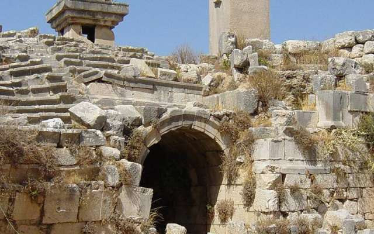
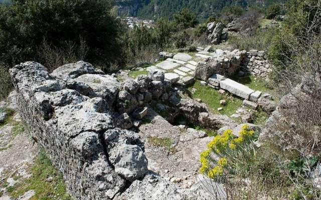

Antalya'da Kültür Varlıkları rehberinde 75 yer var: 48 ören yeri, 11 müze, 6 kale & tarihi yapı, 3 şelale, 3 kanyon, 2 doğal alan, 1 dini yapı, 1 yürüyüş rotası. Aşağıda öne çıkanları, haritayı ve tüm yerlerin listesini bulabilirsiniz.
⭐ Öne çıkanlar

Ksanthos, Likya'nın en önemli kenti ve uzun süre bölgenin yönetim merkeziydi.

Antalya Müzesi, Türkiye'nin en kapsamlı arkeoloji müzelerinden biridir ve Pamfilya, Likya ve Pisidya bölgelerinin hazinelerini bir araya getirir.

Aspendos, Köprüçay'ın (antik Eurymedon) kıyısında kurulmuş bir Pamfilya kentidir ve antik dünyanın en iyi korunmuş tiyatrolarından birine sahiptir.
🗺 Haritada
📍 Tüm yerler (75)
Ören Yeri (48)
AspendosÖren Yeri Patara ÖrenyeriÖren Yeri
Patara ÖrenyeriÖren Yeri Perge ÖrenyeriÖren Yeri
Perge ÖrenyeriÖren Yeri Side ÖrenyeriÖren Yeri
Side ÖrenyeriÖren Yeri Antalya Syedra Antik KentiÖren Yeri
Antalya Syedra Antik KentiÖren Yeri Antiokheia ad Cragum Antik KentiÖren Yeri
Antiokheia ad Cragum Antik KentiÖren Yeri Antiphellos Antik Tiyatrosu (Kaş)Ören Yeri
Antiphellos Antik Tiyatrosu (Kaş)Ören Yeri Aperlai Antik KentiÖren Yeri
Aperlai Antik KentiÖren Yeri Apollonia (Likya) Antik KentiÖren Yeri
Apollonia (Likya) Antik KentiÖren Yeri Ariassos Antik KentiÖren Yeri
Ariassos Antik KentiÖren Yeri
Arykanda ÖrenyeriÖren Yeri Idebessos Antik KentiÖren Yeri
Idebessos Antik KentiÖren Yeri Iotape Antik KentiÖren Yeri
Iotape Antik KentiÖren Yeri Kekova Batık KentÖren Yeri
Kekova Batık KentÖren Yeri Kitanaura Antik KentiÖren Yeri
Kitanaura Antik KentiÖren Yeri Kyaneai Antik KentiÖren Yeri
Kyaneai Antik KentiÖren Yeri Likya Uygarlıkları Müzesi ve Andrıake ÖrenyeriÖren Yeri
Likya Uygarlıkları Müzesi ve Andrıake ÖrenyeriÖren Yeri Limyra ÖrenyeriÖren Yeri
Limyra ÖrenyeriÖren Yeri Myra ÖrenyeriÖren Yeri
Myra ÖrenyeriÖren Yeri Olympos ÖrenyeriÖren Yeri
Olympos ÖrenyeriÖren Yeri Phaselis ÖrenyeriÖren Yeri
Phaselis ÖrenyeriÖren Yeri Phellos Antik KentiÖren Yeri
Phellos Antik KentiÖren Yeri Rhodiapolis Antik KentiÖren Yeri
Rhodiapolis Antik KentiÖren Yeri Sebeda Antik KentiÖren Yeri
Sebeda Antik KentiÖren Yeri Seleukeia (Pamfilya) Antik KentiÖren Yeri
Seleukeia (Pamfilya) Antik KentiÖren Yeri Selge Antik KentiÖren Yeri
Selge Antik KentiÖren Yeri Selinus Antik KentiÖren Yeri
Selinus Antik KentiÖren Yeri Sillyon Antik KentiÖren Yeri
Sillyon Antik KentiÖren Yeri Simena ÖrenyeriÖren Yeri
Simena ÖrenyeriÖren Yeri Sura Antik KentiÖren Yeri
Sura Antik KentiÖren Yeri Teimiussa Antik KentiÖren Yeri
Teimiussa Antik KentiÖren Yeri Termessos ÖrenyeriÖren Yeri
Termessos ÖrenyeriÖren Yeri Trebenna Antik KentiÖren Yeri
Trebenna Antik KentiÖren Yeri Trysa Antik KentiÖren Yeri
Trysa Antik KentiÖren Yeri Tyberissos Antik KentiÖren Yeri
Tyberissos Antik KentiÖren Yeri Öküzini MağarasıÖren YeriAkalissos Antik KentiÖren YeriArneai Antik KentiÖren YeriBeldibi MağarasıÖren YeriEtenna Antik KentiÖren YeriGagae Antik KentiÖren YeriIsinda Antik KentiÖren YeriKandyba Antik KentiÖren YeriKorydalla Antik KentiÖren YeriLamos Antik KentiÖren YeriPednelissos Antik KentiÖren Yeriİdyros Antik KentiÖren Yeri
Öküzini MağarasıÖren YeriAkalissos Antik KentiÖren YeriArneai Antik KentiÖren YeriBeldibi MağarasıÖren YeriEtenna Antik KentiÖren YeriGagae Antik KentiÖren YeriIsinda Antik KentiÖren YeriKandyba Antik KentiÖren YeriKorydalla Antik KentiÖren YeriLamos Antik KentiÖren YeriPednelissos Antik KentiÖren Yeriİdyros Antik KentiÖren YeriMüze (11)
Antalya MüzesiMüze Alanya MüzesiMüze
Alanya MüzesiMüze Antalya Atatürk Evi MüzesiMüze
Antalya Atatürk Evi MüzesiMüze Antalya Etnografya MüzesiMüze
Antalya Etnografya MüzesiMüze Antalya Oyuncak MüzesiMüze
Antalya Oyuncak MüzesiMüze Aziz (St.) Nikolaos Anıt MüzesiMüze
Aziz (St.) Nikolaos Anıt MüzesiMüze Side MüzesiMüzeAlanya Atatürk Evi MüzesiMüzeAntalya Nekropol MüzesiMüzeElmalı MüzesiMüzeMevlevihane MüzesiMüze
Side MüzesiMüzeAlanya Atatürk Evi MüzesiMüzeAntalya Nekropol MüzesiMüzeElmalı MüzesiMüzeMevlevihane MüzesiMüzeKale & Tarihi Yapı (6)
 Alanya KalesiKale & Tarihi Yapı
Alanya KalesiKale & Tarihi Yapı AlarahanKale & Tarihi Yapı
AlarahanKale & Tarihi Yapı Hadrian KapısıKale & Tarihi Yapı
Hadrian KapısıKale & Tarihi Yapı Köprüpazar (Aspendos) KöprüsüKale & Tarihi Yapı
Köprüpazar (Aspendos) KöprüsüKale & Tarihi Yapı KızılkuleKale & Tarihi Yapı
KızılkuleKale & Tarihi Yapı Şarapsa HanıKale & Tarihi Yapı
Şarapsa HanıKale & Tarihi YapıŞelale (3)


Kanyon (3)


Doğal Alan (2)


Dini Yapı (1)

Yürüyüş Rotası (1)
⏳ Zamanda yolculuk
🧭 Bu ili içeren rotalar
🏺 İlgili uygarlık rehberleri
👩🏫 Öğretmenler için
📄 Ksanthos – Zamanda yolculuk📄 Antalya Müzesi – Okul gezisi kâğıdı📄 Benim ilim: Antalya📄 Aspendos – Okul gezisi kâğıdı📄 Aspendos – Zamanda yolculuk📄 Patara – Zamanda yolculuk🚌 Bu ile okul gezisi planlaEtkinlik kâğıtları ▸